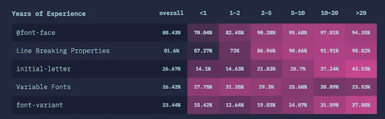

The “State of CSS 2019” report offers a glimpse into the future of
frontend development — more specifically, the future of CSS. In
this article, we’ll review the report, break down key features of
CSS, and explore how they are being perceived in the CSS
community. Then, we’ll use these insights to speculate about
what’s to come in the world of CSS.
First issued in 2019, the “State of CSS” is an annual survey that,
similar to the “State of JavaScript,” records and beautifully
illustrates the opinions of CSS users around the world. The data
points cover CSS libraries and frameworks, features, units and
selectors, and a whole lot more.
In my opinion, the “State of CSS” report is the premier CSS-only
developer survey, and I’m hopeful that it will be a staple of the
frontend developer community for years to come.
In this piece, we’ll examine the CSS features that will be in high
demand in 2020 and discover what the approximately 11,000 survey
respondents had to say about major CSS concepts such as
typography, layouts, interactions, animations, shapes, and
graphics.
The Flexbox layout is a one-dimensional CSS module that is used
to design interfaces and lay out boxes in a presentation within
a container. You can flex the boxes in any direction, expand
them to fill up unused space, or shrink them to avoid
overflowing. Flexbox lets you make all kinds of alignment
adjustments. Think of it as an extension of the grid.
According to the survey, virtually all CSS users have heard of
Flexbox. Even more impressive, 94.43 percent of respondents have
actually used the layout in their projects.

The Flexbox layout is a one-dimensional CSS module that is used
to design interfaces and lay out boxes in a presentation within
a container. You can flex the boxes in any direction, expand
them to fill up unused space, or shrink them to avoid
overflowing. Flexbox lets you make all kinds of alignment
adjustments. Think of it as an extension of the grid.
According to the survey, virtually all CSS users have heard of
Flexbox. Even more impressive, 94.43 percent of respondents have
actually used the layout in their projects.